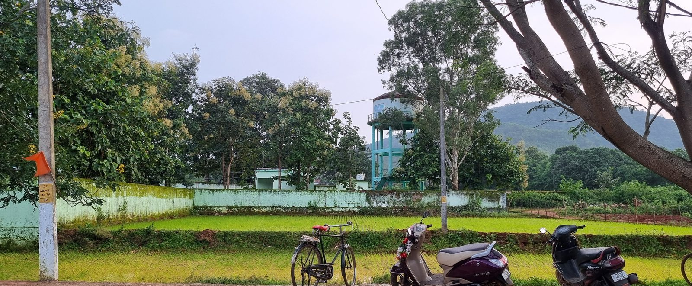

What the week holds
The days
Seven things a week here is actually spent on. None of it is bookable, and none of it is arranged for a visitor — it is the day, and you are in it.
-

Marbles, before the bell. Sarangada. one
Teach & play
The school runs whether anyone visits or not. Subject to their consent, this may include sitting in on a morning.
An hour of English if the teacher wants the help, and the rest of it is marbles on packed earth and being shouted at in Kui and Odia by children who have decided you are theirs now.
Bring nothing. Sweets handed out by a stranger make a crowd, not a friendship, and the teacher has to deal with the afternoon afterwards.
-
No photograph of this yet. The frame stays empty until one is taken here.
two
Shopkeeper at the haat
The weekly market. This may include sitting behind somebody's stall for a morning, subject to their consent — vegetables, dried fish, plastic buckets, whatever that family sells.
If you do, you will not understand the prices and you may be corrected, loudly and cheerfully, by everyone within earshot. That is the whole experience.
The money is theirs. You are labour, not a partner.
-
No photograph of this yet. The frame stays empty until one is taken here.
three
Jungle & jharana
Into the forest with whoever is going, usually for firewood, usually early.
There are small waterfalls in the streams back there. You bathe in one under open sky, in what you are wearing. There is no changing room and there is no towel service.
In monsoon the rocks are green and the water is fast. There are weeks when we will say no.
-

Paddy terraced into the hillside. Kandhamal. four
Kheti, in the red earth
Paddy on the terraces, vegetables on the flat. This may include joining the work, subject to the farmer's consent.
If you join, you may be slow, and someone might redo your row after you leave it. Nobody will say so to your face.
The soil is iron red and it does not come out of clothes. Wear what you are willing to lose.
-
No photograph of this yet. The frame stays empty until one is taken here.
five
Chai on the porch
This is the one that people remember, and it is the one that cannot be scheduled.
You sit on a porch. Someone's grandmother talks at you in a language you do not have. You answer in one she does not have. Somewhere in the second cup this stops being awkward.
The tea is too sweet. Drink it.
-
No photograph of this yet. The frame stays empty until one is taken here.
six
The auto, down the market road
An auto belongs to a driver, and the driver feeds a family with it.
So: you ride the route with him, you help load, and if he decides — his call, not ours — you take the wheel on a quiet stretch he chooses.
If he says no, that is the answer. We do not arrange it in advance to make a page look good.
-

Mist on the Eastern Ghats. Kandhamal. seven
Walking up into the hills
The Eastern Ghats start behind the village. Low forested hills, sal and scrub, trails that are trails because people use them.
Half a day up and back with someone from here. Not a guided trek — there is no guide, there is a person who knows where the path goes.
Leeches in monsoon. Snakes at any time. Boots, not sandals.
None of this is open yet, and this page is not a booking. It is written down now so that when it does open, it opens as what it already says it is.